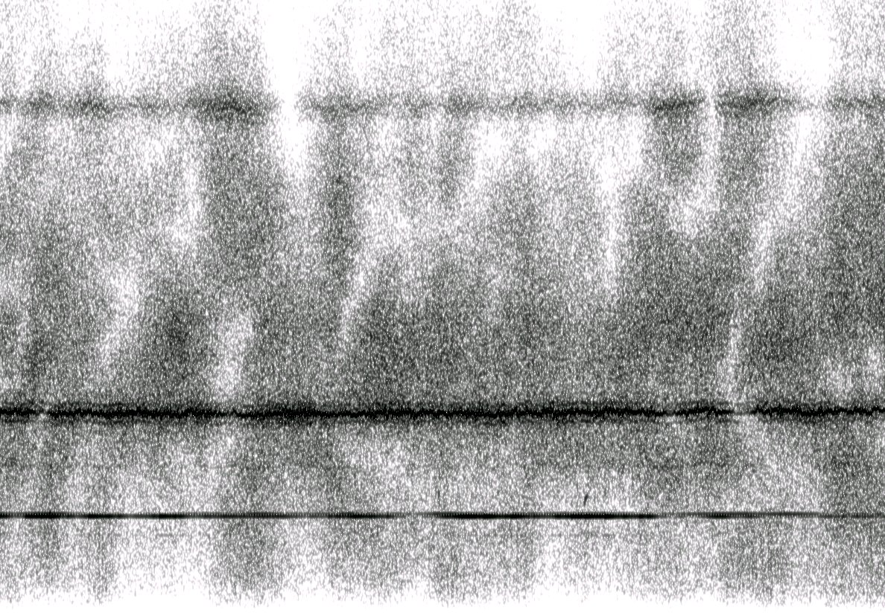

Physical Layer
(Press ? for help, n and p for next and previous slide; usage hints)
Introduction
Core Questions
- What purpose does the physical layer serve in OSI network model?
- What is a frequency band for radio signal?
- How can we modulate a baseband signal to fit in the frequency band?
- What is the fundamental limit for reliable data transmission?
- How does multi-path deteriorate the communication channel?
- How to counter the multi-path effect using diversity?
- What considerations do we have for choosing PHY protocols?
Learning Objectives
- Definition of physical layer in the OSI network model
- Frequency band of radio signal
- Digital modulation and demodulation
- The capacity of a AWGN channel
- Coherence bandwidth and time due to multi-path
- Time/Space/Frequency diversity
- Various communication protocols and the comparison between them
Table of Contents
Overview
OSI 7-Layer Network Model

OSI Physical Layer
- The physical layer defines the means of transmitting raw bits over a physical data link connecting network nodes.
- Deals with accessing the physical medium
- Mechanical characteristics
- Electrical characteristics
- Functional characteristics
- Procedural characteristics
Wireless PHY protocols
Various wireless communication protocols and categories designed for different ranges, data rates, and use cases
Electromagnetic Spectrum
Electromagnetic Spectrum
by Penubag under CC BY-SA 3.0; from Wikipedia
Radio Frequency (RF) Signal

Frequencies and wavelengths of upper ITU radio bands with related common names
by Hedles under CC BY-SA 4.0; from Wikipedia
RF Band Allocation
United States radio spectrum frequency allocations chart as of January 2016
by United States Department of Commerce under Public Domain; from Wikipedia
- Frequency band is a very rare & important resource!
ISM Band
- Radio spectrum reserved internationally for industrial, scientific and medical (ISM) purposes
- e.g., microwave ovens
- Fastest-growing use for low power wireless communications systems
- e.g., WiFi, Bluetooth, Zigbee, LoRa
- Communications equipment must tolerate interference generated by ISM applications
| Frequency Range | Center Frequency | Bandwidth | Availability |
| 433.05~434.79 MHz | 433.92 MHz | 1.74 MHz | Region 1 |
| 902~928 MHz | 915 MHz | 26 MHz | Region 2 |
| 2.4~2.5 GHz | 2.45 GHz | 100 MHz | Worldwide |
| 5.725~5.875 GHz | 5.8 GHz | 150 MHz | Worldwide |
Digital Modulation and Demodulation
Modulation Overview
- Modulation is the process of varying one or more properties of a periodic waveform, called the carrier signal, with a modulating signal that typically contains information to be transmitted.
- In digital modulation, an analog carrier signal is modulated by a discrete signal.
- The most fundamental digital modulation techniques are based on keying:
- ASK (amplitude-shift keying): a finite number of amplitudes are used.
- FSK (frequency-shift keying): a finite number of frequencies are used.
- PSK (phase-shift keying): a finite number of phases are used.
- QAM (quadrature amplitude modulation): a finite number of at least two phases and at least two amplitudes are used.
Rectangle and Sinc Function
- The simplest digital signal is a rectangle function:
\[rect(x) = \begin{cases} 1 & x \in [-0.5,0.5]\\ 0 & otherwise \end{cases}.\]
- Fourier Transform:
\[F(\omega ) = \int_{-\infty}^\infty f(t) \exp(2\pi i \omega t)dt.\]
- The FT of rectangle function is (normalized) sinc function
\[sinc(\omega) = \frac{\sin(\pi*\omega)}{\pi*\omega}.\]
Rectangle and Sinc Function
Energy Spectrum of Rectangle Function
- Most of the energy are located inside the passband of \(\pm 1Hz\).
Properties of Fourier Transform
| Time Domain | Frequency Domain | |
| Linear Combination | \(a\times f(t)+b\times g(t)\) | \(a\times F(\omega)+b\times G(\omega)\) |
| Multiplication | \( f(t)\times g(t) \) | \(F(\omega) * G(\omega)\) |
| Delay | \(f(t-\tau)\) | \(\exp(-2\pi i \tau \omega) F(\omega)\) |
Modulation
- If we multiply the baseband signal (\(rect(t)\)) with a carrier signal (\(cos(2\pi f_0 t)\))
\[S(t) = rect(t)\times \cos (2\pi f_0 t). \]
- In frequency domain, the signal will be centered around the carrier frequency \(f_0\)
- Most of the energy is allocated inside \(f_0\pm 1\).
- If we reduce the symbol time from \(1s\) to \(\tau s\):
- The modulated signal will still be centered around \(f_0\)
- However, the zero crossing will happen at \(f_0 \pm 1/\tau\).
Modulation
Demodulation
- The baseband signal can be recovered as
- A low pass filter can be used in order to:
- Filter out the high frequency \(rect(t) \times \cos(4\pi f_0 t)\) component;
- And recover the baseband signal \(rect(t)\).
Demodulation
Amplitude-Shift Keying
Amplitude-Shift Keying
- We are allocated with a frequency band between 200-300kHz. If we use 4-ASK modulation scheme:
- What is the carrier frequency?
- What is the symbol rate per second?
- What is the bit rate per second?
Frequency-Shift Keying
Frequency-Shift Keying
- In practice, we can smooth the digital signal
- e.g., by Gaussian filter
- the frequency changes more smoothly rather than instantaneously
- to reduce sideband power
- We are allocated with a frequency band between 200-300kHz. If we use FSK modulation scheme:
- What are the sub-carrier frequencies if we assume that we use two frequencies that are 10Mhz apart?
- What is the bit rate per second?
Phase-Shift Keying
QAM
Constellation Diagram
- We could draw the amplitude and phase of the symbol on the complex plane:
Quadrature Amplitude Modulation (QAM)
- We could combine multiple amplitude and multiple phase together to form a constellation
- The most common ones are 16, 64, 256 QAM
- each symbol carries 4, 6, 8 bits repsectively
- For WiFi 6, up to 1024-QAM can be used depending on the channel quality
- Can we use “infinite”-QAM to transmit at “infinite” bit rate?
Free Space Propagation Model
Free Space Loss
Channel Impairments
- Free space loss
- Noise
- Fading
- Multi-path (Next Section)
- Atmospheric absorption
Free Space Transmission
Free Space Transmission
by John S. Huggins under CC BY-SA 4.0; from Wikipedia
Friis Transmission Equation
- Friss Transmission Equation: \[\frac {P_r}{P_t}=D_rD_t\left(\frac {\lambda}{4\pi d}\right)^2.\]
- where:
- \(P_{t}\) is the power fed into the transmitting antenna input terminals;
- \(P_{r}\) is the power available at receiving antenna output terminals;
- \(D_{r}, D_t\) are the antenna directivities (with respect to an isotropic radiator) of the transmitting and receiving antennas respectively;
- \(d\) is the distance between antennas;
- \(\lambda\) is the wavelength of the radio frequency;
- Friss Transmission Equation: \[\frac {P_r}{P_t}=D_rD_t\left(\frac {\lambda}{4\pi d}\right)^2.\]
- To increase signal strength at the receiving end:
- Increase transmitting power;
- Decrease carrier frequency, distance;
- Better antenna
Noise
- Thermal Noise(John-Nyquist Noise)
- Noise seen in switching circuits due to electrons
- Inter-modulation noise
- Noise caused by signals at different frequencies on the same medium
- Crosstalk
- coupling between signal paths
- Impulse Noise
- Power spike (e.g. from thunder)
Thermal Noise
- White noise since it contains the same level of power at all frequencies \[N = ktB\]
- \(k\) is the Boltzmann’s constant: \(1.381\times 10^{-21} W/(K\cdot Hz)\),
- \(T\) is the absolute temperature in Kelvin, and
- \(B\) is the bandwidth.
- At room temperature, \(T = 290K\), the thermal noise power spectral density \(kT = –174 dBm/Hz\)
- dBm is the ratio between the power and a reference of one milliwatt (mW), expressed in dB.
- 0dBm = 1mW, 10dBm = 10mW, 20dBm = 100mW
- For 1MHz bandwidth, the power of the noise is
\(-174 + 10 log 1M= -114dBm\) or \(4\times 10^{-15}W\).
Thermal Noise
Constellation Diagram with Noise
Channel Capacity
Basic of Detection Theory
- Assuming we are using BPSK.
- At the receiving end, we get the following signals:
\[y = x + w = \pm a + w,\]
- \(a^2\) can be viewed as the energy of the received signal
- \(w\sim \mathcal N(0,N_0)\) is a zero mean Gaussian noise, with average energy \(N_0\)
- The Signal to Noise Ratio (SNR) can be defined as \(SNR = a^2/N_0\).
Probability of Error
- We need to estimate (“detect”) the phase of \(x\)
- The probability of error is
\[P_e = P(\hat x \neq x).\]
Bayesian Detector:
- Calculate the conditional probability
\begin{align*} P(x = a|y) &= \frac{P(x = a)P(y|x = a)}{P(y)},\\ P(x =- a|y) &= \frac{P(x = -a)P(y|x =- a)}{P(y)}. \end{align*}- If \(P(x=a|y)\geq P(x=-a|y)\), then \(\hat x = 0\), otherwise \(\hat x = \pi\).
Probability of Error
- Assuming \(\pm a\) has equal probability, then the decision rule is
\[\hat x = \begin{cases} 0 & if\;y\geq 0\\ \pi& otherwise\end{cases}.\]
- The probability of error is given by
Encoding/Decoding
- To reduce bit error rate, one could
- increase the SNR.
- However, this is very expensive
- More clever solution:
- We could transmit the same bit multiple times (repetition code)
- or better yet, use error correct code
- Problem: If we use “higher” QAM (assuming the same average signal energy)
- we pack more symbols into the same area in the constellation diagram
- the symbols are more difficult to differentiate -> higher error rate per symbol
- However, we could use better encoder to reduce the bit error rate
- Can we achieve infinite bit rate (under some constraints on bit error rate)?
Shannon-Hartley Theorem
\[C = B \times log_2( 1 + S/N ) = B \times log_2( 1 + SNR )\]
- where:
- \(C\) the information rate of data that can be communicated at an arbitrarily low error rate;
- \(B\) is the bandwidth of the channel in hertz;
- \(S\) is the average received signal power over the bandwidth measured in watts; and
- \(N\) is the average power of the noise and interference over the bandwidth, measured in watts.
- Fundamental limit: We CANNOT achieve a data rate higher than \(C\) regardless of modulation/encoding scheme.
- Achievability: For any data rate lower than \(C\), there exists a modulation/encoding scheme to achieve it.
- Problem: the computational complexity is usually very high
- Polar code is the first capacity-achieving code with complexity of \(O(n\log n)\).
Shannon-Hartley Theorem
\[C = B \times log_2( 1 + S/N ) \]
- What if we increase the bandwidth \(B\)?
- The noise \(N = kTB = N_0B\) will also increase!
- The maximum capacity is still bounded by \(\log_2(e) S/N_0 \approx 1.44 S/N_0\).
Shannon-Hartley Theorem
\[C = B \times log_2( 1 + SNR )\]
- Even SNR is very bad, we can still have reliable communication:
\[C = B \times log_2( 1 + SNR ) \approx \log_2(e) B \times SNR. \]
- Example: GPS communication
- \(B\): 1 MHz bandwidth,
- \(SNR\): −30 dB, the signal is 1000 times smaller than noise!
- \(C \approx 1.44\times 10^6 \times 10^{-3} = 1440 bit/s\)
- Navigation message of GPS is sent at 50 bit/s
- reliable communication can be established.
Implications
- Good physical layer protocol for intelligent networked system:
- Long Range
- High Throughput
- Low Power
- Other metrics: low latency, mobility, cost, …
- Shannon-Hartley Theorem & Friis transmission equation: NO communication scheme can achieve long range, high throughput and low power simultaneously.
- Need to consider applications:
- Surveillance camera for smart city: long range, high throughput
- Environmental monitoring: long range, low power
- Smart Building: short range
Multi-Path Problem
Multi-path
Impairments
- Free space loss
- Noise
- Fading
- Multi-path
- Atmospheric absorption
Multi-path
- Multi-path: obstacles reflect signals so that multiple copies with varying delays are received
- Reflection - occurs when signal encounters a surface that is large relative to the wavelength of the signal
- Diffraction - occurs at the edge of an impenetrable body that is large compared to wavelength of radio wave
- Scattering – occurs when incoming signal hits an object whose size in the order of the wavelength of the signal or less
Reflecting Wall Example [Tse2005]
- Assuming a single frequency \(f\) sinusoidal signal is transmitted
- The direct signal has a phase delay of
\[\phi_1 = \frac{2\pi}{c}rf.\]
- The reflected signal has a phase delay of
\[\phi_2 = \frac{2\pi}{c}(2d-r)f.\]
Reflecting Wall Example
- The phase difference of the two signal is \[\Delta \phi = \frac{4 \pi}{c} (d-r)f.\]
Coherence Bandwidth
- The difference between the max and min delay is called delay spread. In our case, \[T_d = \frac{2(d-r)}{c}.\]
- If the frequency changes by \(1/2T_d\), then the phase difference changes by \(\pi\).
- \(W_c = 1/2T_d\) is called coherence bandwidth.
- For cellular communication, the path length difference is usually less than 300m
- The delay spread is \(300m/c = 1\mu s\)
- The coherence bandwidth is \( (2 \mu s)^{-1} = 500 KHz\).
Flat v.s. Frequency Selective Fading
- Flat fading: \(W_c\) is much larger than the bandwidth of the signal.
- All frequency components of the signal will experience the same magnitude of fading.
- Narrowband signal: GSM use 200kHz sub-channel
- Frequency-selective fading: \(W_c\) is smaller than the bandwidth of the signal.
- Different frequency components of the signal experience different fading.
- Countermeasures: equalization, …
- Wideband signal: cdmaOne uses 1.25Mhz
Flat v.s. Frequency Selective Fading [Tse2005]
Impulse Response of a Fading Channel
Intersymbol Interference
- Delay causes copies of the signal arriving at the receiver at different times
- Part or all of a given symbol will be spread into the subsequent symbols
- Interfering with the correct detection of those symbols
- To avoid ISI, symbol duration needs to be much larger than delay spread
Coherence Time
- Recall that phase difference of the two signal is \[\Delta \phi = \frac{4 \pi}{c} (d-r)f.\]
- If the frequency is fixed, then the phase changes \(\pi\) if the receiver moves
\[\Delta r = c/4f.\]
- For a carrier frequency of 1GHz, \(\Delta r \approx 7.5 cm\).
- Consider we are on a vehicle at speed \(60km/h \approx 16.7m/s\)
- It takes 4.5ms for \(\Delta \phi\) to change \(\pi\)
- This time is called coherence time
Fading
- If we assume:
- the initial path length difference \(2(d-r_0) = 300m\);
- the base frequency \(f_0 = 1GHz\);
- moving speed of 10m/s.
Real World Fading

An unidentified radio signal at 6.600 MHz with strong propagation noise
by Mysid under Public Domain; from Wikipedia
Diversity
Time Diversity
- Wireless communication is usually an underspread channel
- Delay spread (\(\mu s\)) is much smaller than coherence time (ms)
- A narrowband signal (flat-fading) can transmit hundreds of symbols during a coherent time window
- To ensure that the coded symbols are transmitted through independent or nearly independent fading gains, we can interleave the code.
- Drawbacks: may results in large latency
- GSM use TDMA for voice communication
Time Diversity
Space Diversity: MIMO
- Multiple antenna can be used at the transmitting and receiving end
- Instead of destructive fading, we can achieve constructive fading
SIMO, MISO and MIMO
Frequency Diversity
Spread Spectrum
- Spread-spectrum: a signal with a particular bandwidth is deliberately spread in the frequency domain, resulting in a signal with a wider bandwidth.
- Benefits
- Frequency diversity: not all frequencies are in deep fade
- Used for hiding and encrypting signals
Chirp Spread Spectrum
- A chirp is a sinusoidal signal of frequency increase or decrease over time
- Idea for low energy communication protocols
- e.g. LoRa
Direct Sequence Spread Spectrum
- Information is encoded and modulated by a pseudonoise (PN) sequence
- The data rate \(R\) is much smaller than the transmission bandwidth \(W\) Hz
- e.g., cdmaOne use a bandwidth of 1.2288 MHz
- and a typical data rate (voice) is 9.6 kbits/s
- The processing gain is \(1228.8/9.6 = 128\)
- 64 chips are used for 1 data bit
Direct Sequence Spread Spectrum
- Assuming BPSK: 1 is coded as +1, and 0 is coded as -1
Direct Sequence Spread Spectrum: Decoding
- The original symbol can be recovered by performing an inner product with the same PN sequence
Direct Sequence Spread Spectrum
- How to combat Intersymbol interference:
- The shifted PN sequence is “orthogonal” to the original sequence
Frequency Hopping Spread Spectrum
- Frequency-hopping spread spectrum is a method of transmitting radio signals by rapidly changing the carrier frequency among many distinct frequencies occupying a large spectral band
- e.g. Bluetooth LE uses 37 channels, each occupy 2MHz
- Channels are switched at a rate of 1600 hops/s (\(625\mu s\)).
Orthogonal Frequency Division Multiplexing
- Consider the Bluetooth LE example
- Assuming a symbol rate of \(R\)
- The corresponding \(sinc\) function will occupy \(2R\) bandwidth
- Hence, \(2R + guard\;band\leq 2MHz\)
- Is it really necessary?
Orthogonal Frequency Division Multiplexing
Orthogonal Frequency Division Multiplexing
- \(sinc(x + k),\, k\in\mathbb Z\) are orthogonal to each other
- For the OFDM scheme
- If the symbol rate is \(R\)
- Each sub-carrier signal only needs to be \(R\) apart
- More than twice spectral efficient
- Modulation/Demodulation can be done efficiently via Fast Fourier Transform
- OFDM is originally proposed by Bell lab in 1966
- Used in WiFi, 4G, 5G
Physical Layer Protocol
Bluetooth LE
Bluetooth is a low-power wireless connectivity technology

“Bluetooth Logo” by Skarr21 under CC BY-SA 4.0; from Wikipedia
- cell phones sensors
- headsets
- keyboards/mouses
- video game systems
- The name Bluetooth refers to King Harald Blatand in the region of what is now Norway and Sweden in around 958AD.
- He got this name due to his liking of blueberries and/or the eating of his frozen enemies.
- Bluetooth is derived from his name because King Blatand brought together warring tribes.

{kind=link}
{kind=link}
{kind=link}
{kind=link}
{kind=link}
{kind=link}
{kind=link}
Bluetooth LE
- Bluetooth Low Energy is used extensively in IoT deployments
- beacons
- wireless sensors
- asset tracking systems
- remote controls
- health monitors
- and alarm systems.
- Throughout its history, Bluetooth and all the optional components have been under GPL license and are essentially open source.
PHY of Bluetooth LE
- Operates in the 2.400–2.4835 GHz ISM band (Same as WiFi and 802.15.4)
- The ISM band is divided into forty 2-MHz channels.
- 37 of the channels are used to transmit date
- 3 channels are reserved for advertising
- frequency hopping is used to provide diversity
- Within a channel, data is transmitted using Gaussian FSK modulation
- The bit rate is 1 Mbit/s, and the maximum transmit power is 10 mW
- Can be increased to 2Mbit/s and 100 mW in Bluetooth 5
PHY of Bluetooth LE [Lea2018]
Bluetooth Low Energy Channels
Comparison between Bluetooth and Bluetooth LE
| Technical specification | Bluetooth | Bluetooth Low Energy technology |
| Distance/range (theoretical max.) | 100 m | <100 m |
| Over the air data rate | 1–3 Mbit/s | 125k – 500k – 1M – 2 Mbit/s |
| Power consumption | 1 W as the reference | 0.01–0.50 W (depending on use case) |
| Peak current consumption | <30 mA | <15 mA |
IEEE 802.15.4
- The IEEE 802.15.4 is a standard wireless personal area network (PAN) defined by the IEEE 802.15 working group.
- Defines the physical and MAC layer
- basis of many other protocols: Thread, Zigbee, WirelessHART, and others.
- The goal is to develop a low-cost WPAN with low power consumption.
- Operates in the ISM spectrum:
- 868 MHz, 915 MHz, and 2400 MHz.
| Frequency range (MHz) | Channel numbers | Modulation | Data rate (Kbps) | Region |
| 868.3 | 1 channel: 0 | BPSK/O-QPSK/ASK | 20/ 100 /250 | Europe |
| 902-928 | 10 channels: 1-10 | BPSK/O-QPSK/ASK | 40/250/250 | North America, Australia |
| 2405-2480 | 16 channels: 11-26 | O-QPSK | 250 | Worldwide |
PHY of IEEE 802.15.4 [Lea2018]
- Direct Sequence SS/Chirp SS/Ultra-wideband can be used for diversity
- Typical range: 200 meters outdoors, 30m indoors
Typical transmission current: 15~30 mA, and reception current: 18~37mA
Bluetooth Low Energy Channels
IEEE 802.11 (WiFi)
- First release in June 1997
- The newest is WiFi 6
- Works in both 2.4Ghz and 5Ghz ISM band
- Support up to 1024-QAM
- Use OFDMA for spreading spectrum and multiple user access
- Use Multi-user MIMO
WiFi Channels
Non-overlapping 2.4GHz Wireless LAN Channels
by Liebeskind under GNU Free Document License; from Wikipedia
{kind=link}
WiFi MIMO [Lea2018]
Single User MIMO for 802.11n
Beamforming for 802.11n
Comparison between different generations of WiFi
| Generation | Release | Frequency(GHz) | BW(MHz) | Modulation | Diversity | MIMO | Max Mbps |
| b | 1999 | 2.4 | 22 | QPSK | DSSS | 1 | 11 |
| a | 1999 | 3.7/5 | 20 | 64-QAM | OFDM | 1 | 54 |
| g | 2003 | 2.4 | 20 | 64-QAM | OFDM/DSSS | 1 | 54 |
| n | 2009 | 2.4/5 | 20~40 | 64-QAM | OFDM | SU: 4 | 150 |
| ac | 2013 | 5 | 20~160 | 256-QAM | OFDM | MU: 8 | 867 |
| ax | 2019 | 2.4/5 | 20~160 | 1024-QAM | OFDMA | MU: 8 | 1000 |
Cellular Communication
- The International Telecommunication Union (ITU) is a UN specialized agency
- was founded in 1865
- took its present name in 1932
- before becoming a specialized agency in the UN.
- the Radio communication Sector (ITU-R) defines the international standards and goals for various generations of cellular communication.
| 2G | 3G | 4G | 5G | |
| First Availability | 1999 | 2002 | 2010 | 2020 |
| Bandwidth | NA | Stationary: 2Mbps Mobile 384Kbps | Stationary:1 Gbps, Mobile 100Mbps | Min Down: 20 Gbps/ Min Up: 10 Gbps |
| Features | Voice, SMS | Audio, Video | Unified IP and seamless LAN/WAN/WLAN | IoT, ultra density, low latency |
5G Scenarios
- Enhanced Mobile Broadband (eMBB):
- 1 to 10 GBps connections to UEs/endpoints in the field (not theoretical)
- 100% coverage across the globe (or perception of)
- 10 to 100x the number of connected devices over 4G-LTE
- Connectivity at a speed of 500 km/h
- Ultra-Reliable and Low-Latency Communications (URLLC):
- Sub < 1 ms end-to-end round-trip latency
- 99.999% availability (or perception of)
- Massive Machine Type Communications (mMTC):
- 1000x bandwidth per unit area; this implies roughly 1 million nodes in 1 km 2
- Up to a 10 year battery life on endpoint IoT nodes
- 90% reduction in network energy usage
Sub-6 and mmWave
- 4G-LTE systems mainly use frequencies <3 GHz range.
- 5G may use a multitude of frequencies:
- Sub 6 GHz: More ready for immediate use
- China Telecom: 3.4-3.5MHz
- China Unicom: 3.5-3.6MHz
- China Mobile: 4.8-4.9MHz
- mmWave (30-60 GHz): High bandwidth available, Gbps throughput
- Higher free space loss
- Absorbed by the atmosphere, vegetation, human body
- Difficult to penetrate walls
- Solution: Massive MIMO
- Sub 6 GHz: More ready for immediate use
LoRa
- LoRa is a physical layer for a long-range and low-power IoT protocol
- Originally developed by Cycleo in France and then acquired by the Semtech Corporation in U.S.
- ZTE and Alibaba are in the LoRa Alliance.
- Uses the following ISM band:
- 915 MHz: In the USA
- 868 MHz: In Europe
- 433 MHz: In Asia.
- Chirp Spread Spectrum (CSS) is the modulation technique used in LoRa.
- Typical data rate is 0.3 - 5kbps
- Each LoRa packet contains 51-222 Bytes of Data
- Typical Energy for one message is < 1 \(\mu Ah\)
- Typical range of communication is 2-3km in cities and 5-7km in rural area
- The world record is 702km!
The Things Network
15669 gateways in 150 countries as of Oct, 2020
LoRa Gateways
Comparison
- Good physical layer protocol for intelligent networked system:
- Long Range
- High Throughput
- Low Power
- Other metrics: low latency, mobility, cost, …
- NO communication scheme can achieve long range, high throughput and low power simultaneously.
- Need to consider applications:
- Surveillance camera for smart city: 4G/5G
- Environmental monitoring: LoRa
- Smart Building:
- WiFi for camera
- 802.15.4/Bluetooth LE for temperature sensor